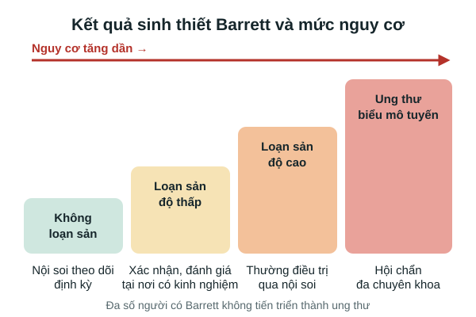

Barrett thực quản là một biến đổi của niêm mạc thực quản, thường liên quan đến trào ngược dạ dày – thực quản kéo dài. Tình trạng này được xem là tổn thương tiền ung thư vì làm tăng nguy cơ ung thư biểu mô tuyến thực quản. Tuy nhiên, không phải người bị GERD nào cũng mắc Barrett, và phần lớn người có Barrett không tiến triển thành ung thư.
Hiểu đúng về Barrett giúp người bệnh theo dõi phù hợp, tránh lo lắng quá mức nhưng cũng không bỏ qua lịch tái khám.
1. Barrett thực quản là gì?
Barrett thực quản là tình trạng biểu mô lát bình thường ở đoạn cuối thực quản được thay thế bởi biểu mô trụ có đặc điểm chuyển sản ruột, được xác nhận bằng nội soi và mô bệnh học theo tiêu chuẩn hướng dẫn áp dụng.

Dịch trào ngược tiếp xúc kéo dài có thể gây tổn thương và thúc đẩy biến đổi niêm mạc. Barrett có thể được phân loại theo chiều dài đoạn tổn thương, thường dùng phân loại Prague C & M để mô tả chu vi (C) và chiều dài tối đa (M).
Barrett không đồng nghĩa với ung thư. Đây là tình trạng cần đánh giá nguy cơ dựa trên chiều dài đoạn Barrett, kết quả mô bệnh học, tuổi, giới, tiền sử gia đình và các yếu tố khác.
2. Ai có nguy cơ cao hơn?
Các yếu tố thường được xem xét gồm GERD kéo dài, tuổi trên 50, giới nam, béo phì (đặc biệt béo bụng), hút thuốc và tiền sử gia đình bậc một có Barrett hoặc ung thư biểu mô tuyến thực quản. Nguy cơ và lợi ích nội soi tầm soát cần được cân nhắc cá thể hóa; không phải tất cả người có ợ nóng đều cần nội soi tầm soát Barrett.
Người có nhiều yếu tố nguy cơ, triệu chứng kéo dài hoặc dấu hiệu báo động nên trao đổi với bác sĩ về chỉ định nội soi.
3. Barrett được chẩn đoán như thế nào?
Nội soi tiêu hóa trên giúp nhận diện vùng niêm mạc nghi Barrett ở đoạn thực quản dưới. Bác sĩ mô tả vị trí và chiều dài tổn thương, thường sử dụng phân loại Prague. Sinh thiết nhiều vị trí theo quy trình chuẩn được gửi xét nghiệm mô bệnh học để xác nhận chuyển sản ruột và đánh giá loạn sản.
Kết quả mô bệnh học có thể được phân thành:
- Không loạn sản.
- Loạn sản độ thấp.
- Loạn sản độ cao.
- Ung thư biểu mô tuyến.
Khi có chẩn đoán loạn sản, nên xác nhận bởi bác sĩ giải phẫu bệnh có kinh nghiệm tiêu hóa và cân nhắc hội chẩn chuyên gia. Viêm nặng có thể che lấp Barrett; ở người viêm thực quản nặng, bác sĩ có thể chỉ định nội soi lại sau điều trị lành viêm.
4. Barrett có tiến triển thành ung thư không?
Barrett làm tăng nguy cơ ung thư biểu mô tuyến thực quản, nhưng nguy cơ tuyệt đối ở người Barrett không loạn sản nhìn chung thấp. Nguy cơ tăng lên rõ hơn khi có loạn sản, đặc biệt loạn sản độ cao.

Vì vậy, mục tiêu quản lý là xác định chính xác mô bệnh học, phân tầng nguy cơ, theo dõi đúng khoảng thời gian và điều trị loại bỏ tổn thương tiền ung thư khi có chỉ định.
5. Theo dõi và điều trị
Với Barrett không loạn sản, người bệnh thường được theo dõi nội soi định kỳ. Khoảng cách nội soi phụ thuộc chiều dài đoạn Barrett và hướng dẫn chuyên môn hiện hành; các hướng dẫn quốc tế thường phân tầng đoạn ngắn và đoạn dài, vì vậy lịch cụ thể cần do bác sĩ nội soi/tiêu hóa quyết định dựa trên kết quả thực tế.
Nếu có loạn sản độ thấp hoặc độ cao, cần xác nhận mô bệnh học và đánh giá tại trung tâm có kinh nghiệm. Các phương pháp điều trị nội soi có thể gồm cắt niêm mạc tổn thương nhìn thấy được và điều trị triệt tiêu niêm mạc Barrett còn lại bằng liệu pháp áp dụng phù hợp, chẳng hạn đốt sóng cao tần. Ung thư sớm cần được phân giai đoạn và hội chẩn đa chuyên khoa để lựa chọn điều trị nội soi, phẫu thuật hoặc phương pháp khác.
PPI thường được sử dụng để kiểm soát GERD và lành viêm; thuốc không làm biến mất Barrett đã hình thành. Phẫu thuật chống trào ngược cũng không thay thế chương trình giám sát Barrett và không được xem là biện pháp phòng ung thư đã được chứng minh.
6. Người bệnh cần làm gì?
Tuân thủ lịch nội soi và sinh thiết được bác sĩ đề nghị.
Dùng PPI đúng chỉ định để kiểm soát trào ngược.
Giảm cân nếu thừa cân, ngừng hút thuốc và hạn chế rượu bia.
Báo với bác sĩ nếu xuất hiện nuốt nghẹn, nuốt đau, sụt cân, nôn kéo dài hoặc xuất huyết tiêu hóa.
Không tự rút ngắn hay kéo dài khoảng cách nội soi chỉ dựa trên thông tin trên mạng.
Câu hỏi thường gặp
Barrett thực quản có phải ung thư không?
Không. Barrett là biến đổi niêm mạc thực quản làm tăng nguy cơ ung thư biểu mô tuyến, nhưng đa số người bệnh không tiến triển thành ung thư.
Barrett thực quản được chẩn đoán bằng cách nào?
Chẩn đoán dựa trên nội soi kết hợp sinh thiết và đánh giá mô bệnh học.
Người mắc Barrett cần nội soi bao lâu một lần?
Khoảng cách theo dõi phụ thuộc chiều dài đoạn Barrett, kết quả mô bệnh học và hướng dẫn chuyên môn. Bác sĩ sẽ cá thể hóa lịch theo dõi.
Tài liệu tham khảo
Hội Khoa học Tiêu hóa Việt Nam. Hướng dẫn chẩn đoán và điều trị bệnh trào ngược dạ dày – thực quản. 2025 (các nội dung về Barrett và chỉ định nội soi).
Shaheen NJ, et al. Diagnosis and Management of Barrett's Esophagus: An Updated ACG Guideline. Am J Gastroenterol. 2022.
American Gastroenterological Association. Clinical Practice Update/Guidance on Barrett's esophagus and endoscopic eradication therapy. Tham khảo hướng dẫn chuyên ngành cập nhật khi áp dụng.
Lưu ý y khoa: Bài viết cung cấp thông tin giáo dục sức khỏe, không thay thế thăm khám, chẩn đoán hoặc điều trị cá nhân. Người đọc cần trao đổi với nhân viên y tế trước khi thay đổi thuốc hoặc kế hoạch điều trị.